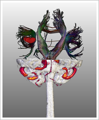

| | ||||||
| |
 |
|||||
July 31, 2010, (passed) |
September 10, 2010 |
|

Submission procedure: The contest is open to everyone except contest organizers and judges. Sponsors can participate noncompetitive. We invite submissions from individuals or teams, from industry or academia. Our focus is visualization research, not the medical practice of surgical planning, so we do not want participants to try building fully-featured surgical planning applications, or to give advice on how these particular patients should be operated on. Rather, we encourage participants to demonstrate the prototype of a tool that supports a method or process (hopefully with an interactive component) for understanding this kind of data through analysis and visualization, with the general target of surgical planning. To demonstrate their approach, participants will submit
The 2-page write-up should not try to give any background information (e.g. about the imaging modality) that will be the same for each contestant.
We would like to learn the important information about how the analyses and visualizations were created, by what kind of software, and how long it took to generate the results. |
| Evaluation Criteria | |
|---|---|
|
The evaluation of all submissions will be performed by a team of five renowned neurosurgeons from Germany. The overall technical quality will additionally be rated by a team of Vis-Experts. Strong emphasis will be put on the clinical value of the presented methods and techniques. That is, not the fanciest visualization technique or GPU implementation is key to receiving a good score, but rather the way the method supports the neurosurgeon in answering the guiding questions and enables him to explore and understand the available planning data. From this considerations, it should be obvious that efficient interaction is highly appreciated! The team of domain experts consists of: |
|
|
Prof. Dr. med. Alexander Brawanski
Director of the Neurosurgical clinic at University Hospital Regensburg, Germany
|
|

|
Prof. Dr. med. Christopher Nimsky
Director of the Neurosurgical clinic at the University Hospital of Marburg, Germany
|
|
Prof. Dr. med. Amir Samii
Vice-Director of the Neurosurgical department at the International Neuroscience Institute (INI) Hannover, Germany
|
|
|
Prof. Dr. med. Ulrich Sure
Director of the Neurosurgical clinic at University Hospital Essen/Duisburg, Germany
|
|
|
Prof. Dr. med. Marcos Tatagiba,
Director of the Neurosurgical clinic at the University Hospital of Tübingen, Germany
|
|